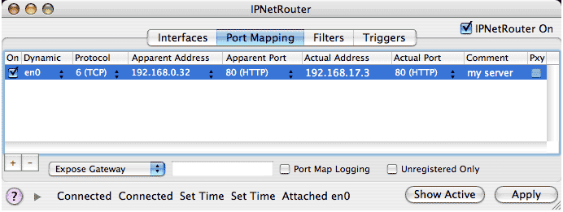
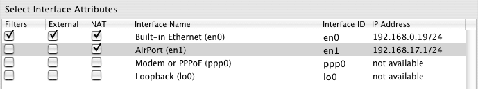
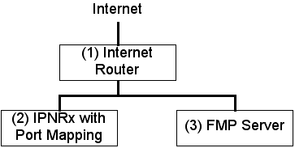

IPNetRouterX provides a feature called "IP Masquerading" that allows you to connect multiple hosts to the Internet using a single user ISP account and single public IP address. This saves you the cost of setting up multiple accounts or getting a block of globally unique IP addresses assigned that your ISP must route (and will charge you for).
IP Masquerading works using a technique called "Network Address Translation" (NAT) with extensions for "Port Multiplexing" (NAPT) and "ICMP Translation". The basic idea is to disguise IP packets to or from your private LAN so they appear to the rest of the Internet as if they only originate from your gateway machine's external IP address. The Network Address Translator in IPNetRouterX is implemented as a Network Kernel Extension that sits between your gateway machine and the public Internet. When the Translator sees a packet from your LAN that doesn't originate from the gateway, it changes the source IP address of that packet to the external IP address of the gateway machine. In order to keep track of which host on your LAN the packet came from, it also assigns it an unused protocol port number on the gateway machine. Whenever a response is received at that port on the gateway, the Translator knows to reverse the process substituting the original IP address and port number on your private LAN.
The effect is to hide multiple hosts behind a single public IP address. Notice it is the action of sending a packet from the LAN to a host on the Internet that creates a return translation entry. Until a host on the LAN initiates contact, it is invisible to the public Internet. It has no public IP address and traffic addressed to the gateway machine is not forwarded to the LAN since there is no reverse translation entry. It passes through the NAT module unchanged so remains addressed to the gateway (unless a different Exposed Host is set). IP Masquerading acts like a firewall allowing you to access the public Internet from inside your LAN, but not the other way around.
This arrangement is ideal for surfing the web from your LAN since each time your web browser requests a page, it creates a reverse translation entry allowing the requested web page to be returned through the NAPT gateway. Suppose you want to run a server on your private LAN and make it visible to the public Internet. You could run all your servers on the gateway machine which is visible to the public Internet, but this might not be the most convenient way to arrange your network. In order to allow servers on your private LAN to be visible to the public Internet, we need a way to create a reverse translation entry without initiating the connection from your private LAN. This is the purpose of "Inbound Port Mapping".
Inbound Port Mapping allows you to manually create a permanent translation entry that maps a protocol port on your gateway machine to an IP address and protocol port on your private LAN. TCP/IP uses the term "Endpoint" to refer to the combination of an IP address and protocol port. Every TCP/IP connection exists between two Endpoints. We use the term "Apparent Endpoint" to refer to the endpoint on your gateway machine that the rest of the Internet sees--your LAN's external IP address and port--and the term "Actual Endpoint" to refer to the Endpoint on your LAN that forms the local end of a connection; the local LAN IP address and port for the particular service to be mapped.
To specify an inbound mapping, click on the Port Mapping tab in the main configuration window.
Suppose you have three machines and want to set up a web server on your LAN as follows:
192.168.17.1 (Gateway machine, IPNR)
192.168.17.2
192.168.17.3 (Web server)
The apparent address (what the Internet sees) is the public IP address of your gateway (the floating IP number assigned by your ISP). This number will be filled in automatically for you in the Port Mapping tab view. The Private address is the address of your web server on your private LAN (192.168.17.3). The port number is whatever port is used for your server. Web servers usually listen on port 80.
In the Port Mapping window, you would press "New" to create a new entery and then double click on each column of the corresponding row to enter the following information:
Apparent Endpoint Address: leave as already filled in
Port: 80
Actual Endpoint Address: 192.168.17.3
Port: 80
Protocol: TCP
Then press the "Apply" button to update the actual record in the NAT table.

Notice under the Dynamic column we have selected en0. This tells IPNetRouterX that the apparent address corresponds to IP interface en0. If the IP address of this interface changes, the port mapping will be updated to the new IP address automatically.
IPNetRouterX provides two features to assist you in debugging your port mappings if needed. First, you can selectively enable or disable individual port mapings with the "On" column and then press Apply; Second, if you enable "Port Map Logging" the Sentry Log will show a brief summary of each packet that is translated.
Static NAT can be used to map a small number of public IP addresses to individual hosts behind your gateway so they are protected by the firewall while remaining externally visible. Please see the detailed description on the Internet Sharing Help page.
If you enable IP Forwarding under the Interfaces tab, the NAT configuration is as follows:
Internet<--->NAT<--->Gateway<--->LAN
In this configuration, only hosts on the public Internet can access a server on your LAN using its public IP address on the gateway. If the LAN tried to access your server via its public address, the packet would be delivered to the gateway without being translated.
If you check "NAT" in the interface row corresponding to the LAN IP interface, the configuration becomes:
Internet<--->NAT<--->Gateway<--->NAT<--->LAN
In this configuration, if a host on your LAN tries to access a server on your LAN using its public (port mapped) IP address, the packet is translated before it gets to the gateway so the gateway will forward it back out the same interface it arrived from. This allows you to use the same DNS names to access your servers behind the gateway from hosts on your LAN (but not from the gateway itself).

Alternatively, you can configure a local caching name server using the DNS Server tool and override the DNS names of public hosts on your LAN. If you configure the gateway machine itself to use the loopback address (127.0.0.1) as its name server, it too will be able to access servers on your LAN using their public Domain Names.
There are different resources you can use to determine whether a particular IP service is NAT compatible and whether port mapping will work in a given situation.
The first step is to find out if port mapping will work at all and which ports might need to be mapped. Consult the problem software's web site and documentation for "firewall" and/or "NAT" compatibility information. Our web site FAQ page, Nettalk archive, and other web search engines can be used to search for information on particular software packages as well. IPNetRouterX can be used to test if port mapping is a possible solution using the Exposed Host feature. IPNetMonitorX can be used to determine which TCP/IP ports are being opened by an application as a possible clue to which ports might need to be mapped.
To see if a single LAN client's IP service Internet access problem can be fixed with port mapping, you can use the Exposed Host feature to redirect all of the gateways unmapped ports to that client. If exposing the LAN client through the gateway works for the service in question then it is likely that port mapping will work for that service.
IPNetMonitorX's connection list window can be used on a client Mac to see what TCP/IP ports are opened by a particular IP application or service. You can download IPNetMonitorX from our web site. As an example, launch IPNetMonitorX and then your browser on a Mac. Open the Connection List window in IPNetMonitorX and position it so that you can observe that window unobstructed by any browser window that may be open. If the "Monitor" button is visible, click it. Now, in the browser, connect to a web site somewhere (e.g. www.sustworks.com). Note the ports being opened. Now, attempt the same thing with the problem application or service on the same client. The connection list window only lists TCP and UDP ports so if other protocols are required the only way to figure this out is via the particular software vendors documentation.
If the exposed host feature works, you can always use that to get services temporarily to any particular LAN client suffering behind the NAT router.
Some services can only be mapped to one client behind a NAT firewall at a time (those that require a fixed port number); this is a limitation with any standard NAT router, not just IPNetRouterX. A few software packages have some features that will work through NAT and other features that won't. Others cannot be made to work through NAT at all. The best source for authoritative information is the software vendor.
Apple's TIL24321 also has a description of IP ports used by Appleshare IP and other Apple software. Our web site FAQ page covers some of the common application we frequently receive questions about. Search the Nettalk user email list archives for user generated information about a package or service if you do not find any useful info elsewhere on the web.
The Exposed Host feature in IPNetRouterX can be used to make a single host on your LAN visible to the public Internet, or to prevent unauthorized port access to any host including your gateway machine. If you are not planning on having anyone access your private network from the public (Internet) interface, you may wish to take advantage of this security feature. It effectively prevents external sources from seeing/accessing your gateway except when you are using it to access the Internet.
The feature behaves similarly to the "DMZ" (De-Militarized Zone) feature in other routing solutions. When a packet from the Internet arrives at your gateway, it is checked against the NAT table to see if there is a host on your LAN expecting a response on that port (a matching NAT table entry). If there is no such entry (host expecting a response), the Exposed Host setting determines how the packet is handled.
If Exposed Host is set to Gateway (default); the packet is allowed to pass unmodified so remains addressed to the gateway machine when it is delivered to the TCP/IP software.
If Exposed Host is set to None; the packet is deleted immediately. Only solicited or permanently mapped ports are allowed through to your Gateway or any other host on your LAN.
If Exposed Host is set to the IP address of a host on your LAN, the destination (IP) address is replaced with the corresponding exposed host address so the packet will be forwarded to that host (effectively placing it in the De-Militarized Zone as opposed to behind your firewall).
Ports mapped by you or created by LAN clients through the public interface can still be reached externally. For example, if you map port 80 to a LAN client (or the gateway) then port 80 will be exposed, even if exposed host is set to "none".
In addition, this prevents tranlating packets for a host on the same IP subnet (physical Ethernet) as the external interface allowing you to connect directly between hosts on your external subnet and hosts on your private LAN (without port mapping).
Network Address Translation or IP masquerading can be a surprisingly powerful technique. One customer had an old FileMaker Pro server that would only accept connections from a limited number of remote address and was not easily upgradeable. By running IPNetRouterX on a host on his LAN and port mapping FMP requests to his old server, his FMP server accepted all requests as comming from his IPNRx box regardless of where on the Internet the request originated.

As a result, any authorized host on the Internet can access the FMP server, but the server only sees requests originating from the IPNRx box.
By adding a remote interface to configure port mapping on the IPNRx box, we could redirect ARD or Timbuktu access to any host on our LAN.
The basic concept of Network Address Translation (NAT) is described in RFC-1631, a public internet standards document. IPNetRouterX extends this by adding "Port Multiplexing" (sometimes called NAPT for Network Address and Port Translation). In addition to translating between private and public IP addresses, IPNR translates multiple private addresses to a single public address by assigning unique port numbers to each protocol stream. RFC-1034 and RFC-1035 detail how domain names are resolved. You can also read more about this by searching for "Network Address Translation", "Port Multiplexing" and "Domain Name Service" on the web.